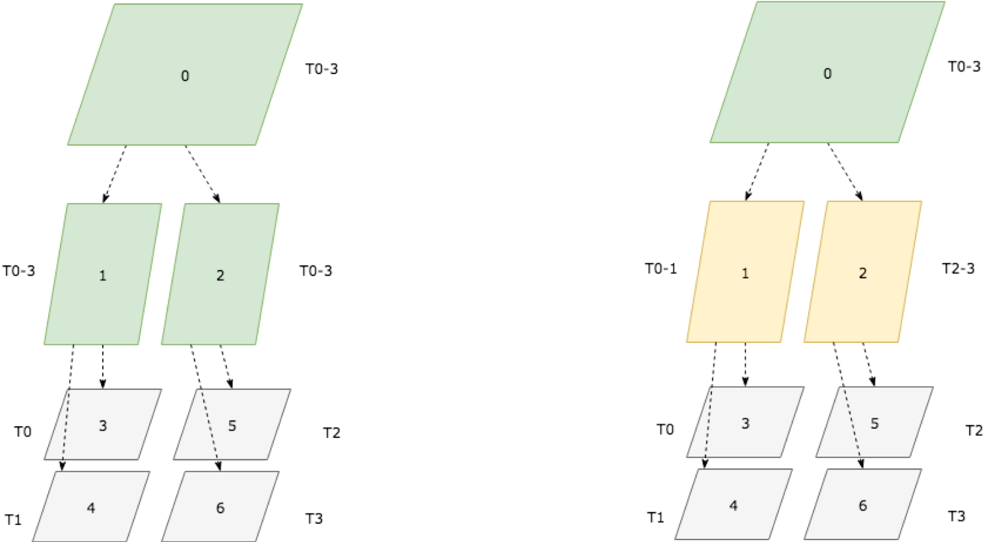
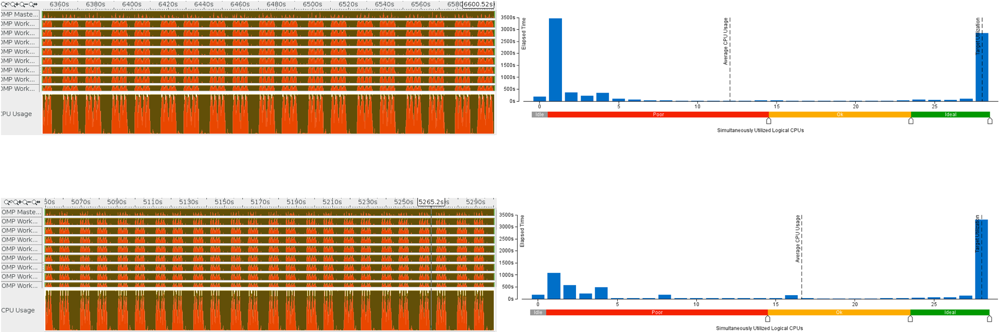
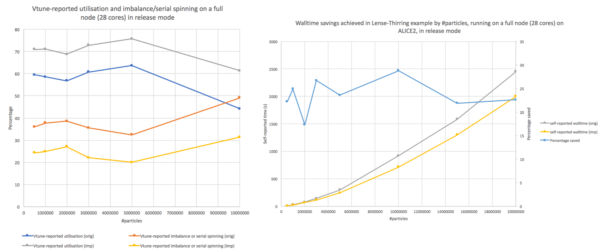
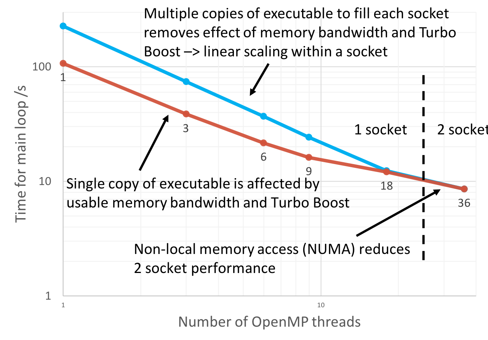

The DiRAC RSE Group
3 August 2018 Logos needed...
- Alexei Borissov: ab325@st-andrews.ac.uk, The University of Edinburgh
- Peter Boyle: paboyle@ed.ac.uk, The University of Edinburgh
- Sam Cox: sc676@leicester.ac.uk, University of Leicester
- Mark Filipiak: m.filipiak@epcc.ed.ac.uk, EPCC, The University of Edinburgh
- Jeffrey Salmond: js947@cam.ac.uk, University of Cambridge
- Andy Turner: a.turner@epcc.ed.ac.uk, EPCC, The University of Edinburgh
- Azusa Yamagouchi: ayamaguc@exseed.ed.ac.uk, The University of Edinburgh

Slide content is available under under a Creative Commons Attribution-NonCommercial-ShareAlike 4.0 International License.
This means you are free to copy and redistribute the material and adapt
and build on the material under the following terms: You must give appropriate credit, provide
a link to the license and indicate if changes were made. If you adapt or build on the material
you must distribute your work under the same license as the original.
Note that this presentation contains images owned by others. Please seek their permission
before reusing these images.
Built using reveal.js
reveal.js is available under the MIT licence
DiRAC
Services
Extreme Scaling
Memory Intensive
Data Intensive
DiRAC RSE Group
- Distributed across the DiRAC sites
Threading in Phantom
Sam Cox
Phantom
PHANTOM is an efficient, low memory code for astrophysical fluid dynamics using the Smoothed Particle Hydrodynamics (SPH) technique
- Fortran with OpenMP
- Initial profiles revealed issues with threading efficiency in key part of the application
- Improved tree distribution of work to improve performance
Work distribution

Thread utilisation

Performance improvement

EAGLE Physics in SWIFT
Alexei Borissov
The EAGLE Project
- The EAGLE project involved some of the largest simulations of universe evolution using smoothed particle hydrodynamics (SPH) code Gadget2
- EAGLE allowed detailed investigation of large variety of phenomena including galaxy formation, evolution, and interaction
- (Motivation for this project?)
SWIFT
- SWIFT is a next-generation open-source SPH cosmology code designed to exploit modern algorithms and parallelisation techniques
- It is significantly faster (up to 30x when running only hydrodynamics) than code used to run EAGLE, and shows good strong scaling to 200 000 cores, allowing larger simulations, or greater resolution.
- Designed to be modular with regards to subgrid physics implementation, allowing wide range of simulations - from planet scale to universe scale
- Image is final snapshot of dark matter only simulation run with SWIFT using 4.5 × 108 particles in an 800Mpc box. Simulation run from early universe to present took 75 hours on 28 cores (1 node), representing a speedup of 8.5x over Gadget2
EAGLE Physics in SWIFT
- Implementation of subgrid physics from EAGLE in SWIFT, including cooling, star formation, stellar feedback, chemical enrichment, black hole formation and feedback
- Appropriate functions need to be adapted from EAGLE or written in order to implement each of these phenomena within SWIFT
- Automated tests and documentation for each are also required
- Currently cooling has been implemented and automated tests have been written
Cooling
- Cooling rate of a particle depends on: internal energy, redshift, hydrogen number density, helium fraction, metallicity
- Rates are stored in 4D tables which are interpolated to obtain cooling rate for single particle
- An improved integration scheme to evolve internal energy, based on the Newton-Raphson method was implemented to reduce number of table lookups (as opposed to bisection method in EAGLE)
- Tests were written to confirm cooling rate is read correctly from tables and to ensure cooling of uniform box of gas is performed correctly by comparing with subcycled explicit solution
Optimisation of Gandalf
Mark Filipiak
GANDALF
GANDALF is an astrophysical hydrodynamics/N-body dynamics code for star formation, planet formation, and star cluster problems. C++, MPI, OpenMP
- Most time-consuming routine (calculating forces - computationally intensive) does not use vectorisation
- Next most time-consuming routines (finding neighbouring particles) are memory limited – increased cache use should improve performance
- OpenMP scaling is expected to be good
- MPI scaling suffers from load imbalance
Initial investigations
Measuring performance using the Intel performance tools: Advisor (vectorisation), VTune Amplifier (cache use, OpenMP scaling)
- Intel performance tools help you focus on the code hotspots but provide a lot of information which can be difficult to interpret
- Always measure performance to decide optimisation strategy - the most time-consuming routine actually needs cache use improved as well as vectorisation
- OpenMP scaling within a socket is confounded by effects that depend on the number of cores being used: usable memory bandwidth and Turbo Boost
Next step: use Trace Analyser and Collector to measure MPI performance
Single node scaling

Staggered Fermion Performance of Grid on KNL
Azusa Yamagouchi
Grid QCD Software
- Key Quantum Chromodynamics simulation program. Theoretical support for discovery at LHC and beyond.
- Understand the strong force binding quarks in hadrons How are protons, neutrons, mesons built out of quarks.
- MCMC evaluation of Feynman path integral for QCD.
Optimise performance of staggered fermion treatement within Grid on multi-node KNL platform to support major UK QCD project on CSD3 system at Cambridge. Research internationally connected to DOE funded USQCD and MILC, HPQCD and Fermilab collaborations.
DiRAC operator on KNL
- Multiple right hand side solver: apply same PDE matrix to many solves at once to enhance cache reuse:
- Single and double precision on single node
- first KNL implementation that works on multiple nodes
- BlockCG: share Krylov space search directions across many solves: 1000 iterations -> 221 iterations for 8 RHS
Performance gains
- New algorithm yields both:
- Higher flop rate: due to more efficient cache reuse
- Lower flop count: due to solving multiple RHS simultaneously
- Combined improvements give a 7x improvement in time to solution on a single node. e.g.:
- 1.2s for 1 RHS
- 1.4s for 8 RHS
Also worked to push these improvements into the US MILC QCD software but this has been hampered by software moderators requiring work beyond the scope of this project before incorporation. UK researchers using the development branch of MILC to access improvements for their work.
Optimisation of Baidu ML using ideas from QCD
Peter Boyle and Guido Cossau
What do QCD and ML have in common?
Both require best bandwidth from Infiniband interconnect
What is stopping applications accessing wire performance on Infiniband (for large messages)?
Not enough work to saturate the links from single MPI thread
Overheads associated with page faults
How can we achieve best BW on Infiniband?
Use hugepages to reduce number of potential page faults
(Note Transparent hugepages are not generally enough as Linux virtual memory gets fragmented over time and transparent hugepages do not guarantee concurrency. Must configure reserved huge pages at boot time. On x86 processors, since 1985, the time to read a page has decreased by 4000x but the number of pages has increased by 100,000x with the page size staying constant at 4KB.)
Have multiple MPI communicators running on separate threads to saturate the interconnect BW
What did this actually entail in practice?
Collaboration with MPI library developers to implement multithreaded requirements properly
Collaboration with system administrators to enable reservation and allocation of hugepages by users
Modification of the Baidu code to allocate memory through hugepages and implement MPI communicators on multiple threads
Performance gains
Increased %age of wire BW achieved (in QCD and Baidu) to 80-90% from
Leads to 4-10x increase in actual application performance
Management
Andy Turner
The good, the bad and the ugly
- Diversity of approaches and expertise
- Natural delegation to leads at each site mitigates single points of failure and bottlenecks
- Detailed technical discussion is more difficult
- Fewer opportunities for ad hoc discussion and sharing of information
- JISC Vscene has proven the best technology for regular meetings as people can connect online or by phone
- RSE requests overseen and awarded by science panel which has led to poor estimates of RSE effort required for some projects
Things can only get better
- Biannual face-to-face day-long meetings
- Improve technical specification of projects and oversight before funding
- Potential to allow researchers to use DiRAC RSE to fund people outwith the core team with specific expewrtise
- Improve the process for assigning RSEs to provide technical reviews of DiRAC project proposals
Questions?
https://aturner-epcc.github.io/presentations/RSE2018_DiRAC_Sep2018/